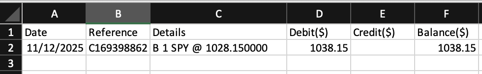
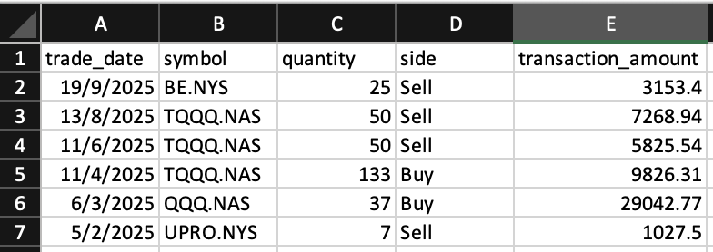
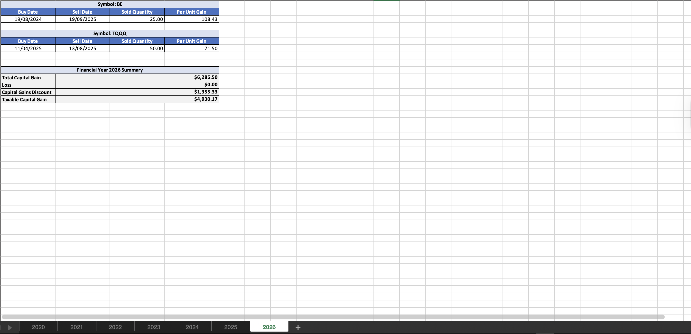

This Capital Gains Tax (CGT) Calculator helps you accurately calculate your minimum tax obligations from investing in assets like stocks or crypto. The calculator uses a linear optimisation solver to calculate the results. Simply upload your transaction data and receive a comprehensive breakdown of your capital gains, losses, and tax discounts for each financial year.
Follow these simple steps to calculate your capital gains tax optimally. Each section below provides detailed guidance on preparing your data and understanding the results.
If you trade with NABTrade or CommSec then the process is highly automated, but as long as you can download all your trade history then any service will work, just follow the steps below


Once you've uploaded your CSV or Excel file, your detailed capital gains tax calculation will be downloaded as an Excel file and will look like the image in the below dropdown. The results will include a comprehensive breakdown of all your transactions, gains, losses, and tax discounts for each financial year you have traded, optimised for paying the minimum possible CGT!
